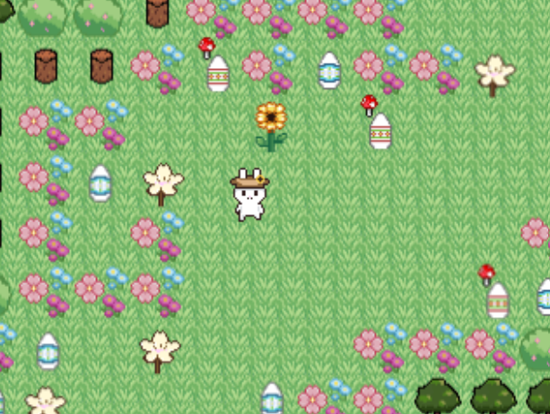
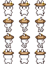

𖦹 ׂ 𓈒🐇 ೀ Easter Hunt 𓂃 ࣪˖ ִֶָ𐀔
. ݁₊ ⊹ . ݁˖ Beschreibung ₊ ⊹ . ݁˖ . ݁
Wir haben ein Spiel programmiert, das mit dem Thema Ostern zu tun hat. Die Spielfigur ist eine Hase (Osterhase), das möglichst viele Blumen und Eier einsammeln muss. Dabei stellen sich Hindernisse auf seinem Weg. Es gibt insgesamt 5 Level, die immer kompliziert werden. . . 🐰🐇🐣🌷⋆౨ৎ˚˖ ࣪Spielablauf ˚˖౨ৎ ⋆࣪

─────୨ৎ───── Sammle Blumen und Ostereier, um viele Punkte zu bekommen und suche nach dem Schlüssel, um ins nächste Level zu gelangen. ─────୨ৎ─────
⋆ 𓈒 ˚˖ 𖦹 𐀔 Gegenstände im Spiel 𓂃 𖦹 ˚˖ 𓈒 ⋆

‧₊ ᵎᵎ 🍒 ⋅ ˚✮ Weisse Blumen und Ostereier sind Sammelobjekte, die Punkte bringen. Violette Blumen haben negative Auswirkungen, sie heben den Schnelligkeitseffekt der Sonnenblume auf und verringern Ihre Punktzahl. Die Sonnenblume macht dich für eine bestimmte Zeit schneller und bringt Punkte.